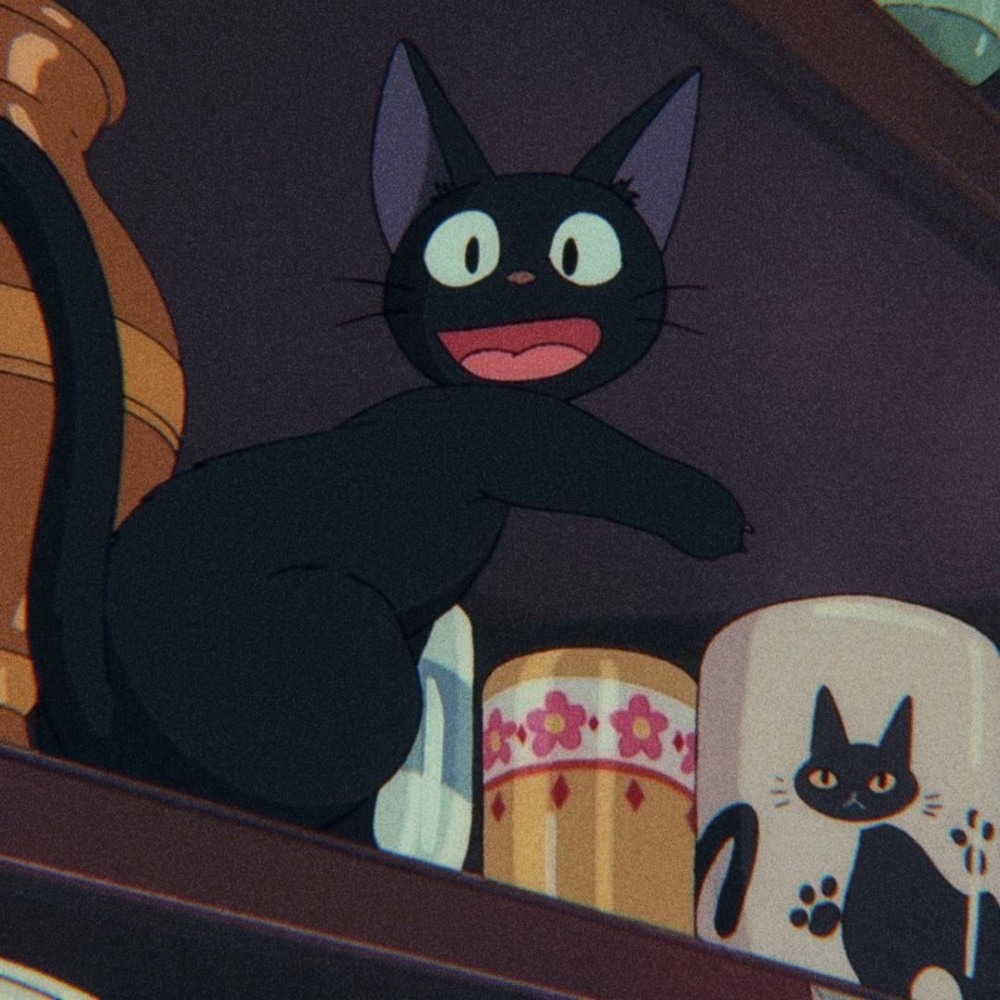

Jiji é o gato de estimação de Kiki e seu companheiro mais próximo no filme Kiki's Delivery Service , dirigido por Hayao Miyazaki, do Studio Ghibli.
- Espécie: Gato
- Gênero: Masculino
- Função: Personagem coadjuvante
- Dublador japonês: Rei Sakuma
Personalidade:
Na versão americana, Jiji é um gato tagarela e sarcástico que gosta de se orgulhar, enquanto na versão japonesa, Jiji é um gato cauteloso e fofo que age humilde e está sempre pronto para ajudar Kiki. O personagem de Jiji é significativamente diferente no dub americano. Na versão japonesa, Jiji é dublada pela artista feminina Rei Sakuma , enquanto na versão americana Jiji é executada por Phil Hartman, e também tem um comportamento mais sábio. Na cultura japonesa, os gatos geralmente são retratados com vozes femininas, enquanto na cultura americana, suas vozes são mais específicas ao gênero. Existem várias linhas de Hartman onde Jiji simplesmente não diz nada no original (como na cena em que Jiji se aproxima de Lily ao longo do topo da parede). A personalidade de Jiji é notavelmente diferente entre as duas versões, mostrando uma atitude mais cínica e sarcástica na versão em inglês de 1998, em oposição a cautela e consciência no japonês original.
